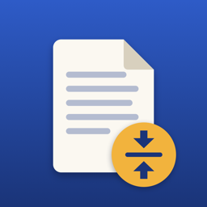

iPDF – Support
PDF scanner with maximum-size compression and searchable text. Everything on your device and in your iCloud, no account.
Contact
Developer: Opem Gestionali di Mazzuferi Sara
Email: info@opemgestionali.com
We usually reply within a few business days. Please include your iPhone or iPad model and iOS version.
Frequently asked questions
Where are my PDFs?
PDFs saved with "Save to Files" are in Files › iCloud Drive › iPDF or, if iCloud is off, in Files › On My iPhone (or iPad) › iPDF. Scans stay in the app's library until you delete them.
How do I get my documents on my iPad (or a new iPhone)?
Use the same Apple Account with iCloud Drive turned on for iPDF (Settings › [your name] › iCloud › Drive): the library and PDFs sync automatically. New documents appear once they have fully downloaded.
The PDF won't get below the size I chose.
With many pages or very photographic pages, a small limit may be impossible to reach without making pages unreadable. iPDF tells you and creates the smallest file possible. Try splitting the document, removing pages or using the Black and White filter.
The recognized text has mistakes.
Text recognition runs on your device and works best with well-lit, straight, sharp pages. Handwriting is only partially recognized.
Why do I see a warning when importing a PDF?
If the PDF already contains digital text, its pages are imported as images and the text is recognized again: links, forms and digital signatures are not preserved.
Do I need an internet connection?
No. iPDF doesn't send any data to any server; a connection is only used by iCloud to sync your documents across your devices.